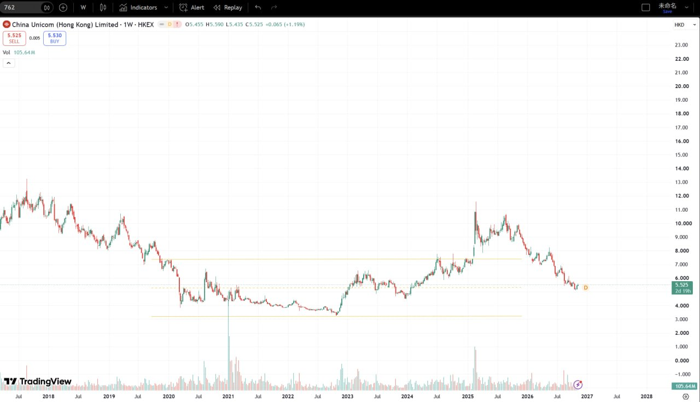
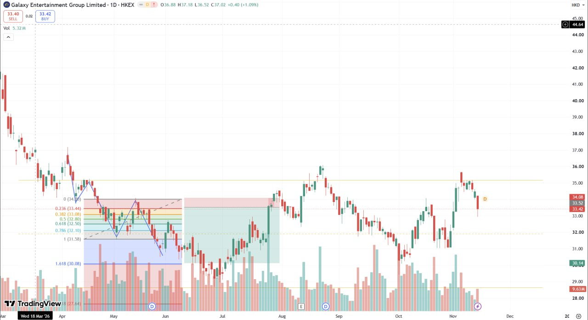
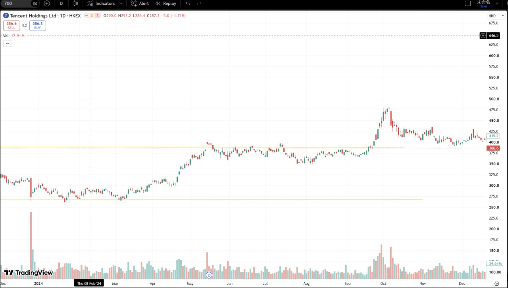
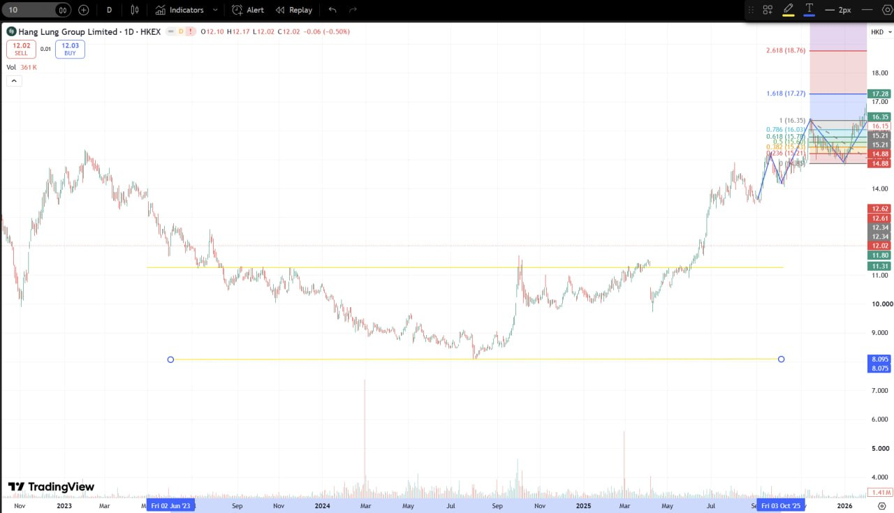
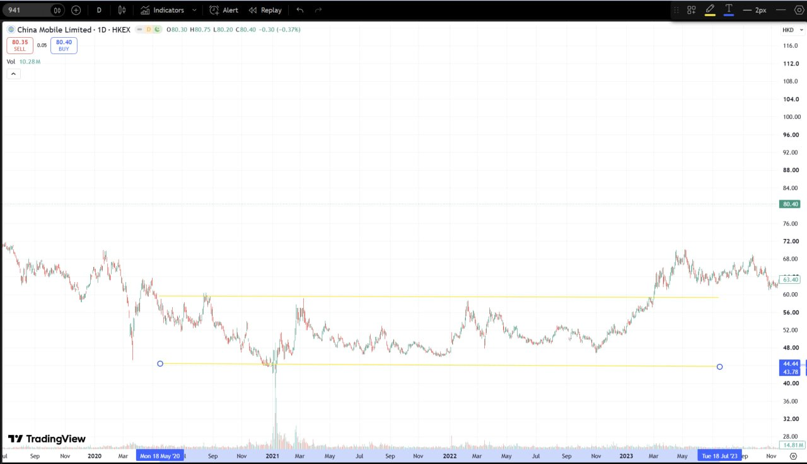
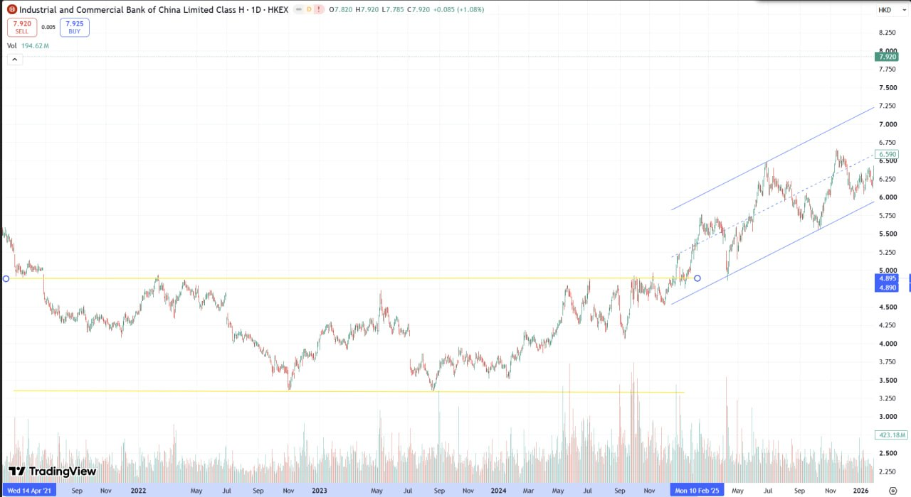
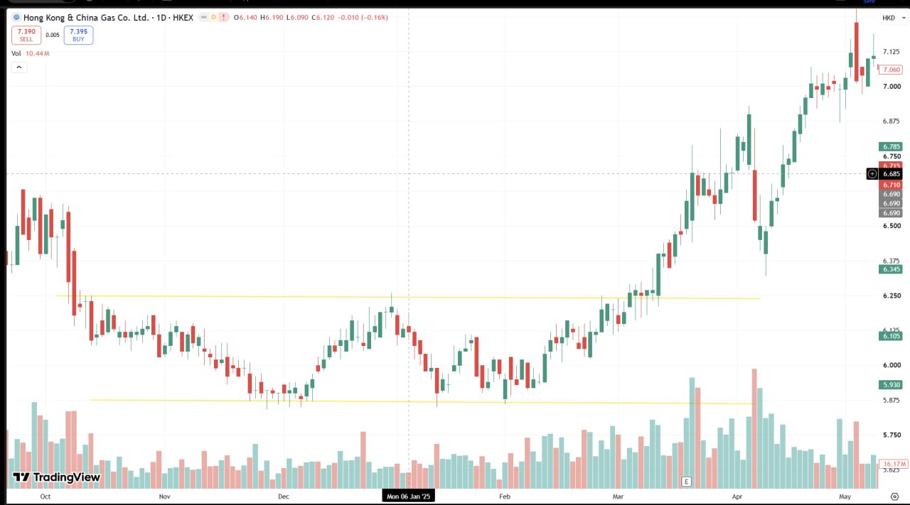
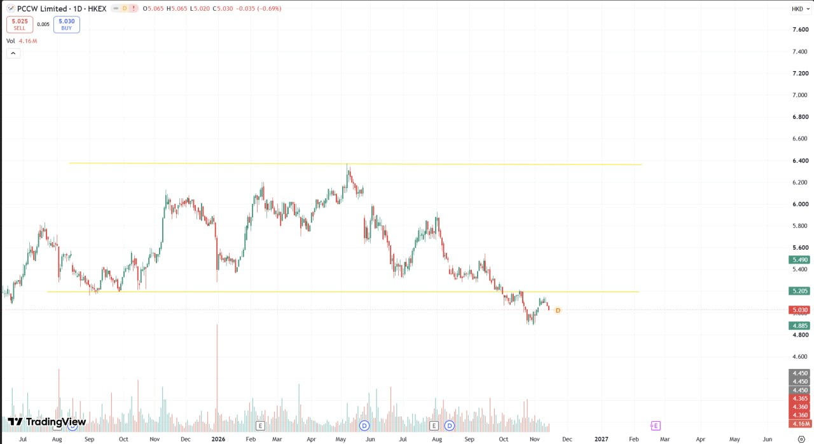
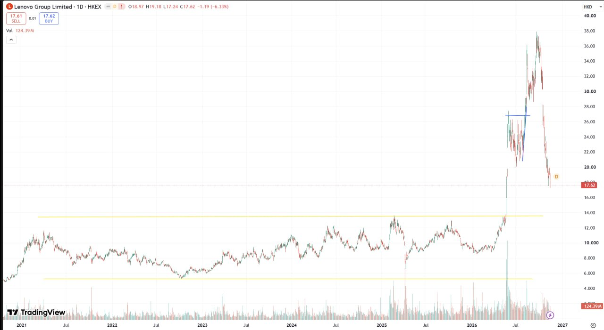
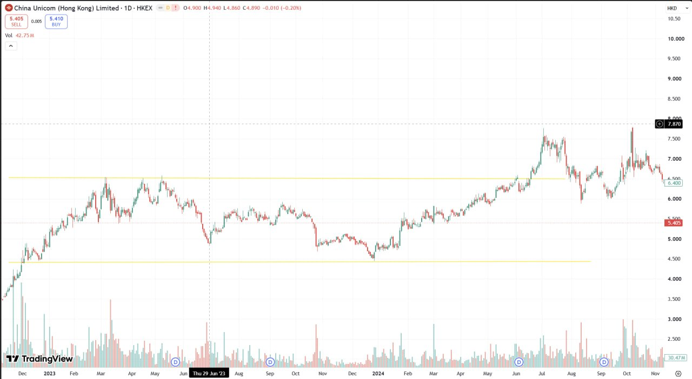

01 · China Unicom (Hong Kong) Limited
762 · 1W · HKEX
週線。軸由 Jul（年份圖上冇印）至 2028。三條黃線冇標價。現價 5.525，喺上線同中線之下、下線之上。冇 Fib 標籤。O5.455 H5.590 L5.435 C5.525 +0.065 (+1.19%)。Vol 105.64M。
Bottom Breakout · 底部交易突破
底部交易突破是高/低位橫行後不斷觸碰高/低位。 要睇嘅係觸碰本身，唔係突破完先算數。
唔係單邊直行。先喺高位或者低位走出一段橫行。
橫行之後，價格一再觸到嗰個高位或者低位。觸碰本身就係呢頁要睇嘅位，唔係已經突破完先算。
數字係從截圖讀出，唔係行情重拉。有錯就講，我改。仲有圖就續傳。

週線。軸由 Jul（年份圖上冇印）至 2028。三條黃線冇標價。現價 5.525，喺上線同中線之下、下線之上。冇 Fib 標籤。O5.455 H5.590 L5.435 C5.525 +0.065 (+1.19%)。Vol 105.64M。

日線。十字線 Wed 18 Mar '26。Fib 讀到：0.236 (33.44)、0.382 (33.08)、0.5 (32.80)、0.618 (32.50)、0.786 (32.10)、1 (31.58)、1.618 (30.08)。0 嘅價被線遮住，延伸比例字被 logo 遮住（價 27.54 讀到，比例唔寫）。黃線冇標價。代號圖上冇印，Yahoo 對公司名：0027.HK。O36.88 H37.18 L36.52 C37.02 +0.40 (+1.09%)。Vol 5.32M。

日線。十字線 Thu 08 Feb '24。兩條黃線冇標價。O290.0 H293.2 L286.4 C287.2 −5.0 (−1.71%)。Sell 386.6 / Buy 386.8。Vol 17.91M。軸標由 Dec 至下一個 Dec，中間印 2024。

日線，軸約 2023 至 2026。藍框 Fri 02 Jun '23、Fri 03 Oct '25。兩條黃線冇標價。Fib 讀到：2.618 (18.76)、1.618 (17.27)、1 (16.35)、0.786 (16.03)、0.618 (15.77)、0 (14.88)。0.5 / 0.382 / 0.236 嘅價被遮，唔寫。代號圖上冇印，Yahoo 對公司名：0010.HK（Hang Lung Group，唔係地產 0101）。O12.10 H12.17 L12.02 C12.02 −0.06 (−0.50%)。Vol 361K。

日線。藍框 Mon 18 May '20、Tue 18 Jul '23。兩條黃線冇標價。右軸現價標 80.40。代號圖上冇印，Yahoo 對公司名：0941.HK。O80.30 H80.75 L80.20 C80.40 −0.30 (−0.37%)。Vol 10.28M。

日線，軸 Wed 14 Apr '21 至 2026，另一藍框 Mon 10 Feb '25。兩條黃線冇標價。上升通道中線標 6.590。冇 Fib。代號圖上冇印，Yahoo 對公司名：1398.HK。圖上寫 Class H。O7.820 H7.920 L7.785 C7.920 +0.085 (+1.08%)。Vol 194.62M。

日線，軸 Oct 至 May。十字線 Mon 06 Jan '25。兩條黃線冇標價。代號圖上冇印，Yahoo 對公司名：0003.HK。O6.140 H6.190 L6.090 C6.120 −0.010 (−0.16%)。Sell 7.390 / Buy 7.395。Vol 10.44M。

日線。軸印 Jul … 2026 … 2027 … Jun。兩條黃線冇標價。代號圖上冇印，Yahoo 對公司名：0008.HK。O5.065 H5.065 L5.020 C5.030 −0.035 (−0.69%)。Vol 4.16M。

日線，軸 2021 至 2027。兩條黃線冇標價。代號圖上冇印，Yahoo 對公司名：0992.HK。O18.97 H19.18 L17.24 C17.62 −1.19 (−6.33%)。Vol 124.39M。

日線，軸 Dec 至 2024-11。十字線 Thu 29 Jun '23。黃線標 6.500 同 4.500，中間紅虛線標 5.500。同第 1 張同一間公司，呢張圖上冇印代號，Yahoo：0762.HK。O4.900 H4.940 L4.860 C4.890 −0.010 (−0.20%)。Vol 42.75M。